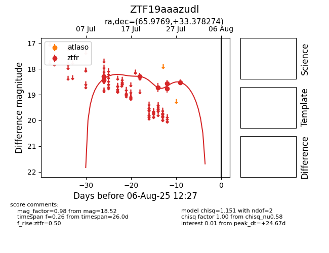

Target ZTF19aaazudl at 2025-08-06 17:07, see:
FINK: fink-portal.org/ZTF19aaazudl
Lasair: lasair-ztf.lsst.ac.uk/objects/ZTF19aaazudl
ALeRCE: alerce.online/object/ZTF19aaazudl
alt names
ZTF19aaazudl (ztf,fink)
coordinates:
equatorial (ra, dec) = (65.9769,+33.37827)
galactic (l, b) = (165.8563,-11.25524)
photometry
last ztfr=18.52
7 ztfr detections
